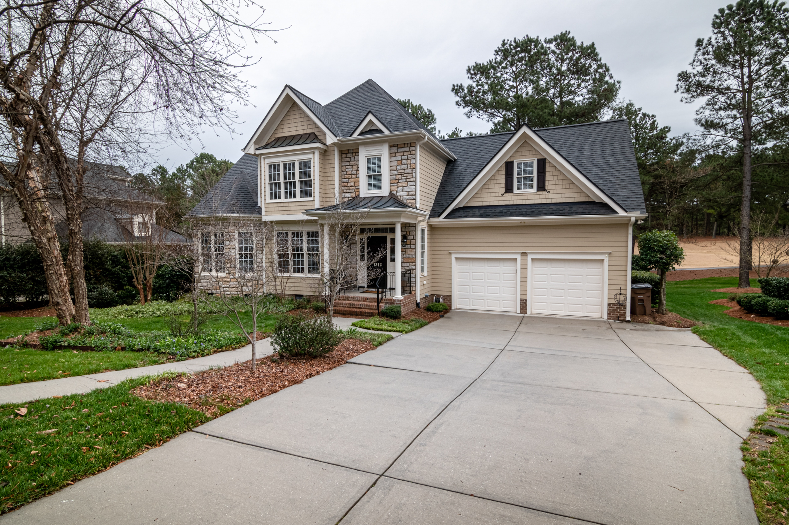

In this project we look at the bestseller products, the top customers, the total revenue for the years 2016, 2017, 2018 and the best sales representatives.

My tableau dashboards for projects on Bike Stores, Top five players in the premier league in 2018/2019 and Air BNB.

In this project I used SQL to clean the data as I completed missing values with the current data at hand as a reference, split a column that holds much data into multiple columns for more clarification and removed duplicates and unnecessary columns accurately.

In this project I cleaned and analyzed COVID data in SQL and Excel and got all the infections, deaths and vaccination statistics then I used tableau to make a dashboard to visualize these statistics.

In this project I used SQL to find the top five scorrers in the premier league in the 2018/19 season and get their statistics in the 2018/19 and 2019/20 seasons like appearances, goals, assists, yellow cards and red cards.

In this project I used R to visualize the relation between penguins flipper length and body mass.